Passo 1 di 5
L'impronta
In studio con me si prende l'impronta dei tuoi denti. È da qui che parte tutto: il grillz nasce sulla forma della tua bocca.
Firenze · grillz, tooth gems, piercing
Passo 1 di 5
In studio con me si prende l'impronta dei tuoi denti. È da qui che parte tutto: il grillz nasce sulla forma della tua bocca.
Passo 2 di 5
Scegliamo insieme il modello, il metallo (oro oppure argento cromato) e le pietre. Il disegno è il grillz che andremo a costruire.
Passo 3 di 5
L'impronta viene mandata in un laboratorio odontotecnico. In circa 7 giorni il tuo grillz è pronto.
Passo 4 di 5
Lo ritiri sempre da me: lo proviamo insieme e controlliamo che sia tutto a posto. Se c'è qualche imperfezione, l'odontotecnico lo rifinisce sull'anatomia dei tuoi denti.
Passo 5 di 5
Si salda il resto e il grillz è tuo. Dall'impronta al sorriso, con me dall'inizio alla fine.
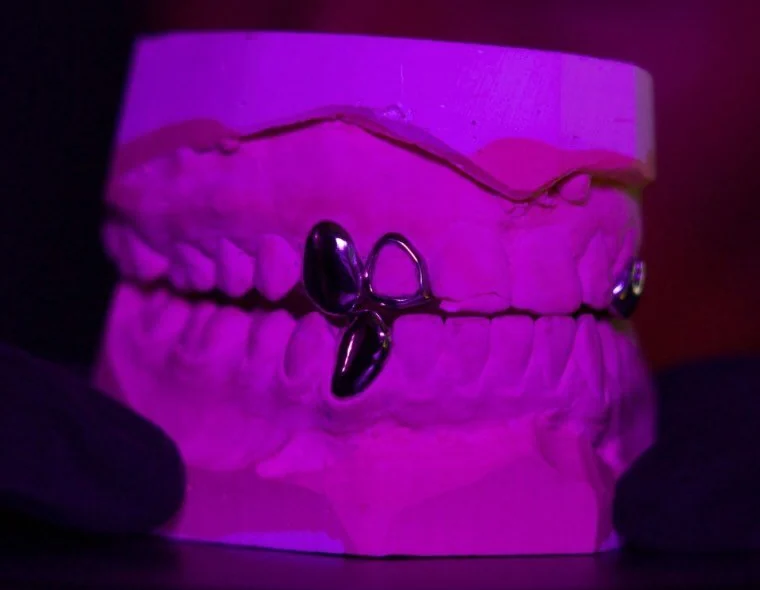
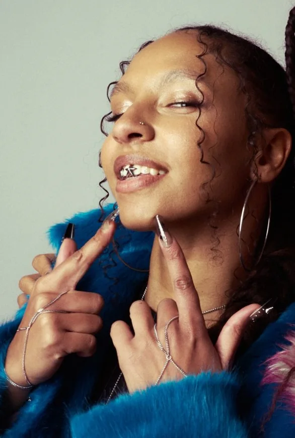
Chi ti accoglie in studio
Mi chiamo Arianna Campana e a Firenze faccio piercing e gioielleria dentale: grillz su misura e tooth gems. Lavoro da Pachamama Tattoo e, ogni tanto, in guest in altri studi.
Mi piace che tu sappia già chi trovi prima di venire. Per questo scrivimi pure prima, anche solo per un dubbio: ti rispondo io, e quando arrivi in studio non siamo due sconosciuti.
Cosa faccio
Prendiamo l'impronta dei tuoi denti e disegniamo il grillz insieme: forma, metallo, pietre. Viene realizzato in laboratorio odontotecnico da professionisti, quindi calza davvero.
Come funziona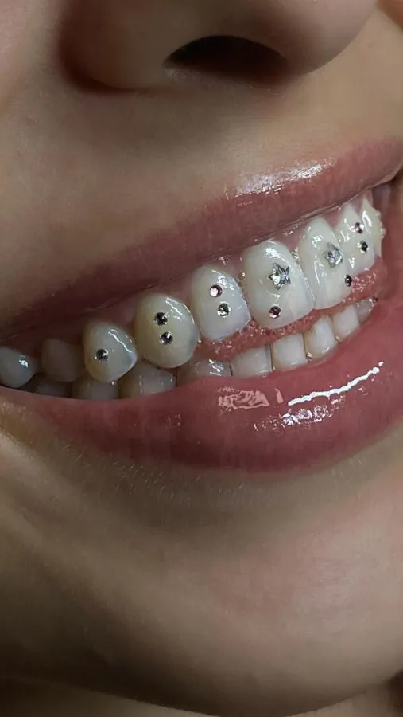
Una gemma sola o un disegno intero sul sorriso, senza impronte e senza attese. Si sceglie insieme dove metterle e come averne cura perché durino il più a lungo possibile.
Quanto durano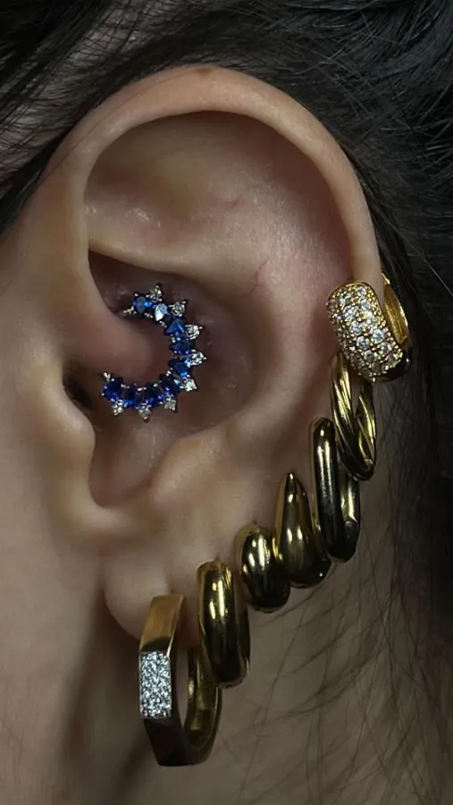
Orecchio, naso, ombelico, dermal. Gioielli scelti uno per uno, applicati con calma, con tutto quello che serve sapere per farli guarire bene.
PrenotaAlcuni lavori
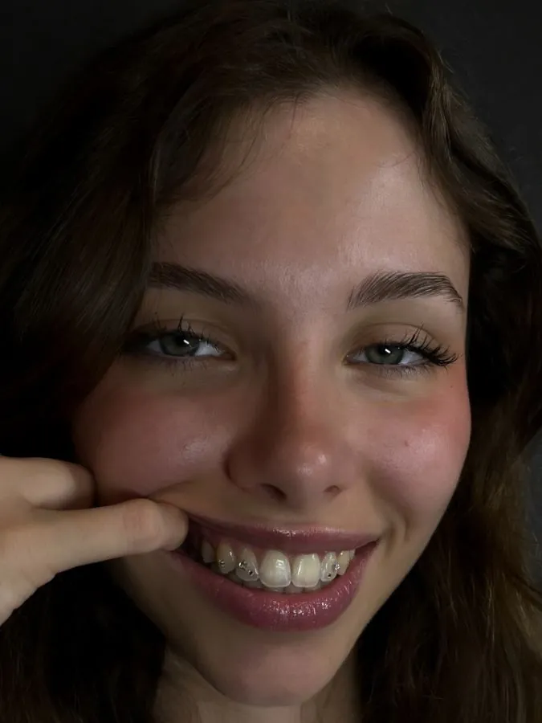
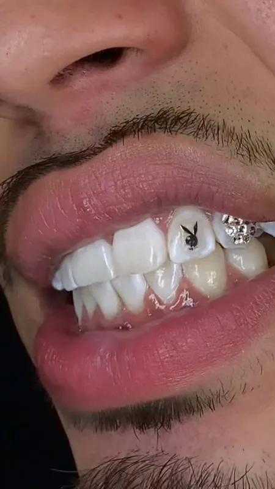
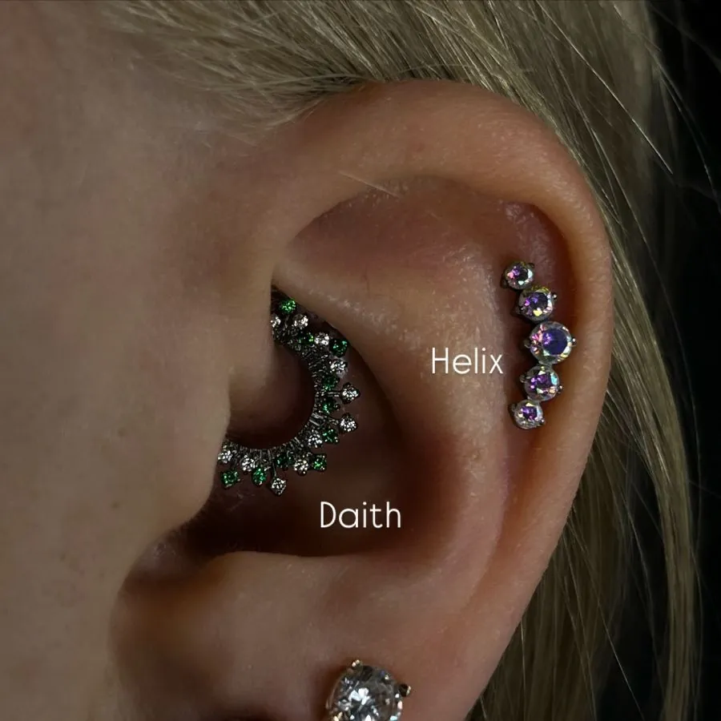
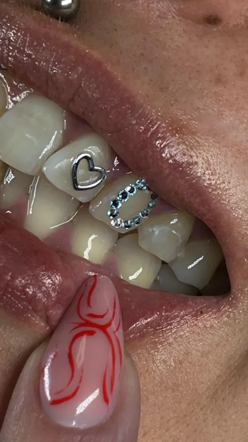
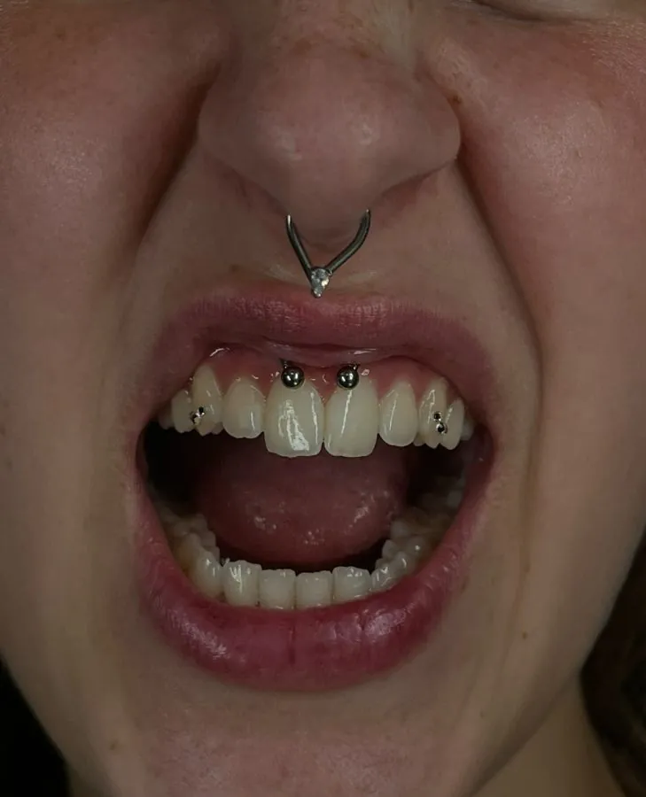
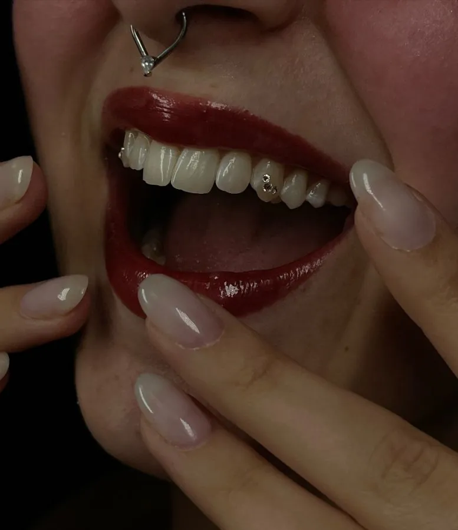
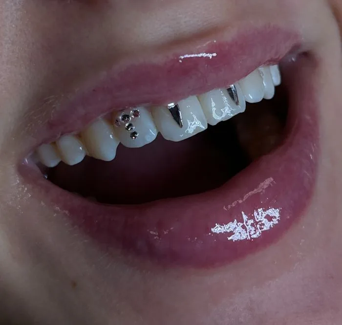
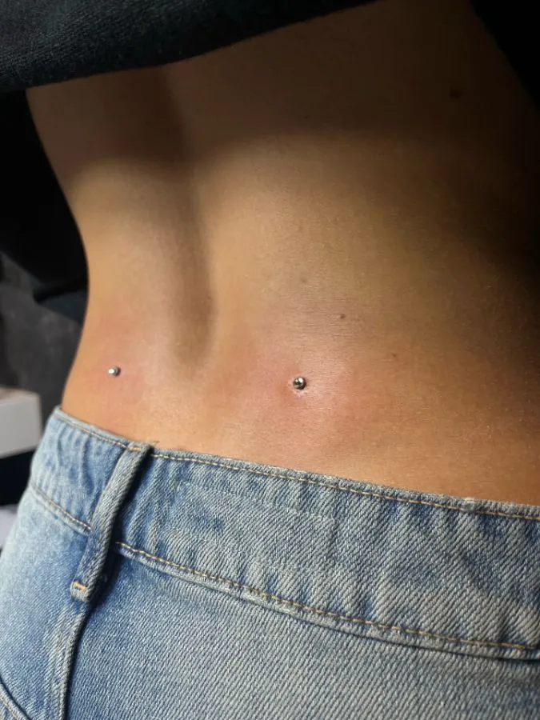
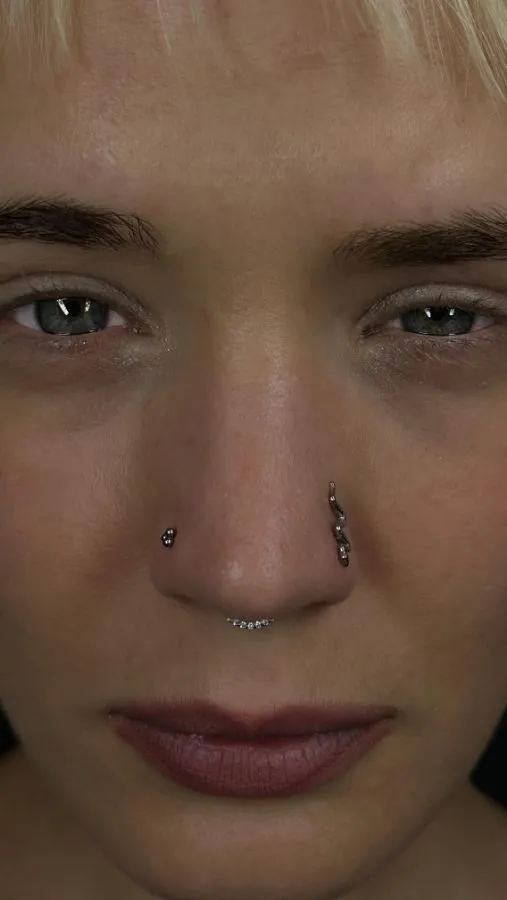
Domande frequenti
Dipende da come si tratta il dente, dall'alimentazione e dall'igiene. Quando scegliamo dove metterle ti spiego come averne cura.
Le gemme si applicano sulla superficie del dente, non è un intervento invasivo. Per qualsiasi dubbio sul tuo caso scrivimi prima di prenotare.
Mi scrivi, decidiamo il design e prendiamo l'impronta in studio. Poi il grillz viene realizzato in laboratorio odontotecnico: in circa 7 giorni è pronto e lo ritiri da me. Il percorso, passo dopo passo, è raccontato in cima alla pagina.
Lavoro a Firenze, da Pachamama Tattoo. Faccio anche guest in altri studi: le date le trovi sulle storie in evidenza del mio profilo Instagram.
Prenota
Un messaggio basta per iniziare: dimmi se ti interessa un grillz, una gemma o un piercing e ti rispondo appena posso.